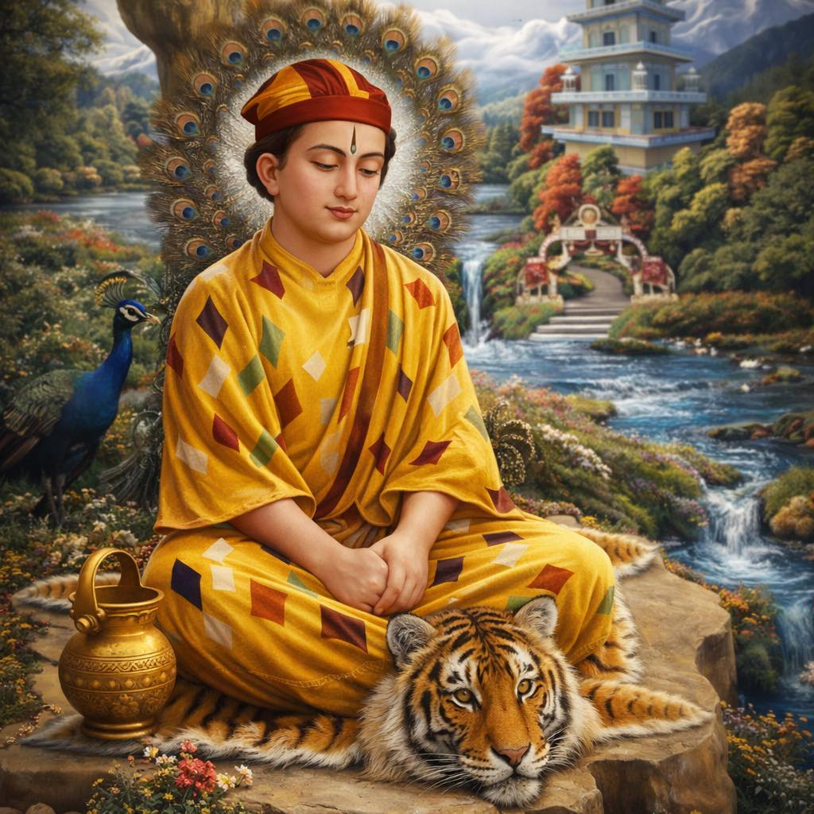
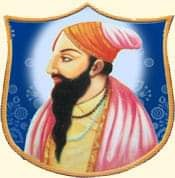
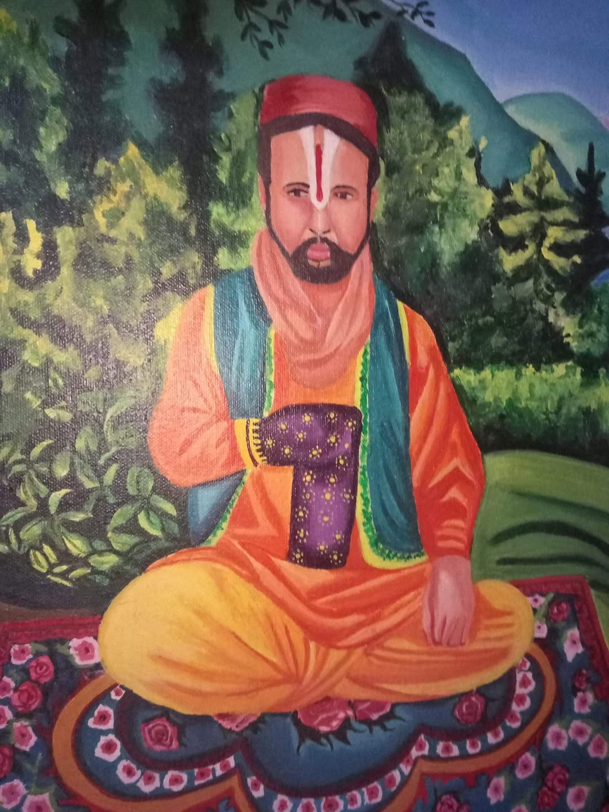
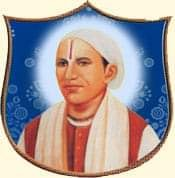
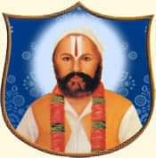
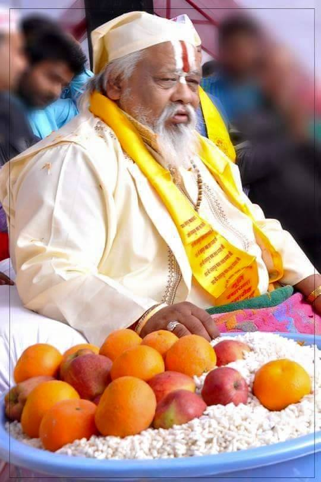

The Vaishnavacharyas of Shri Dhianpur Dham follow a sacred lineage starting from the 14th-century saint Shri Bawa Lal Ji. Below are the names of the 15 spiritual successors (Mahants) who have preserved the teachings and traditions of the Dhianpur Gaddi.
श्री ध्यानपुर धाम के वैष्णवाचार्य 14वीं सदी के संत श्री बावा लाल जी से शुरू होने वाली पवित्र वंशावली (परंपरा) का पालन करते हैं। नीचे उन 15 आध्यात्मिक उत्तराधिकारियों (महंतों) के नाम दिए गए हैं जिन्होंने ध्यानपुर गद्दी की शिक्षाओं और परंपराओं को संरक्षित किया है।

🚩The founder and first Acharya.
संस्थापक और प्रथम आचार्य।
The immediate successor and second Acharya.
तत्काल उत्तराधिकारी और द्वितीय आचार्य।
Third Acharya.
तृतीय आचार्य।
Fourth Acharya.
चतुर्थ आचार्य।
Fifth Acharya.
पांचवें आचार्य।
Sixth Acharya.
छठे आचार्य।
Seventh Acharya.
सातवें आचार्य।
Eighth Acharya.
आठवें आचार्य।
Ninth Acharya, who initiated the 10th successor.
नौवें आचार्य, जिन्होंने 10वें उत्तराधिकारी को दीक्षा दी।

🚩10th Acharya (1847–1875), known for his association with the Maharaja of Poonch.
10वें आचार्य (1847-1875), जिन्हें पुंछ के महाराजा के साथ उनके जुड़ाव के लिए जाना जाता है।

🚩11th Acharya (1875–1935).
11वें आचार्य (1875-1935)।
12th Acharya, who served as the Guru for the 13th successor.
12वें आचार्य, जिन्होंने 13वें उत्तराधिकारी के लिए गुरु के रूप में कार्य किया।

🚩13th Acharya (1948–1978) who built the famous Lal Dwara in Delhi.
13वें आचार्य (1948-1978), जिन्होंने दिल्ली में प्रसिद्ध लाल द्वारा का निर्माण करवाया था।

🚩14th Acharya (1978–2001) who renovated many structures within the Dham.
14वें आचार्य (1978-2001), जिन्होंने धाम के भीतर कई संरचनाओं का नवीनीकरण किया।

🚩15th and current Vaishnavacharya of Shri Dhianpur Dham (2001–Present).
श्री ध्यानपुर धाम के 15वें और वर्तमान वैष्णवाचार्य (2001-वर्तमान)।